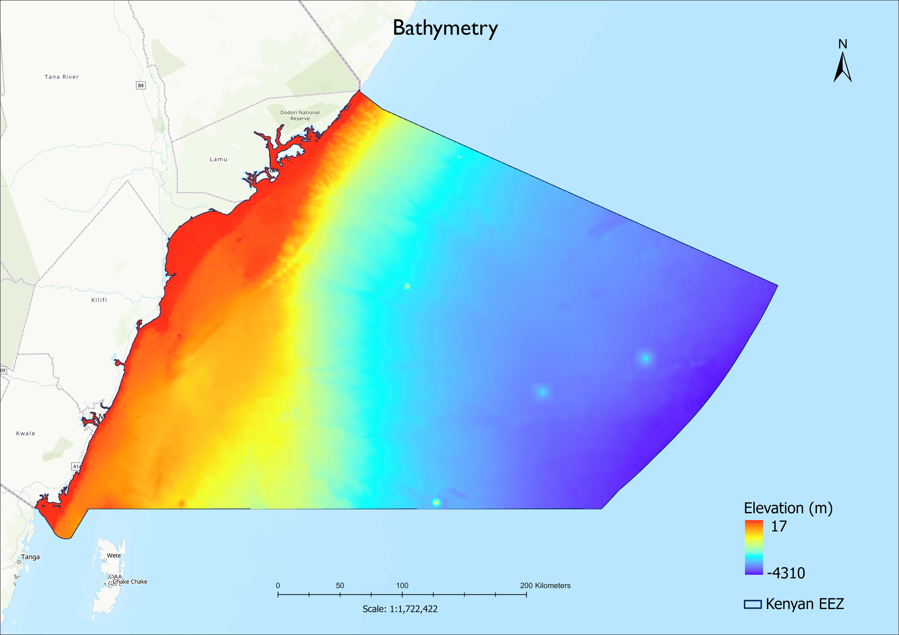
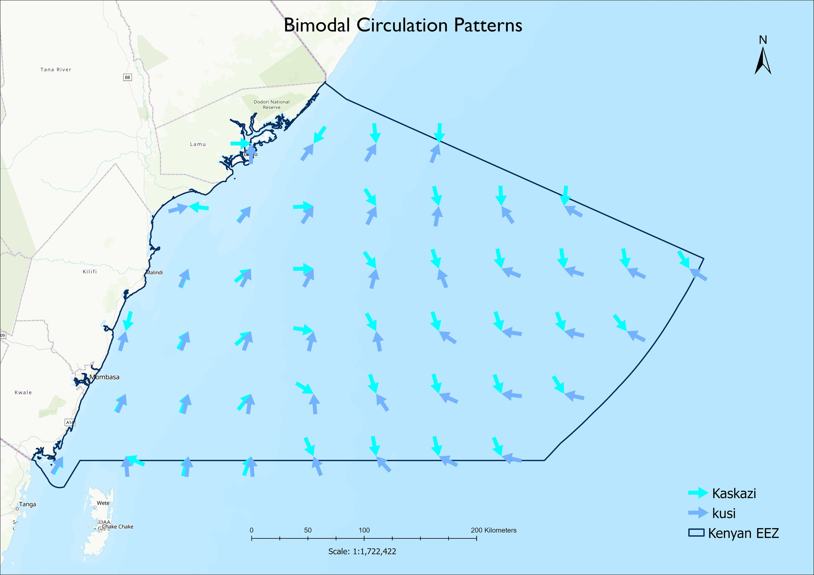
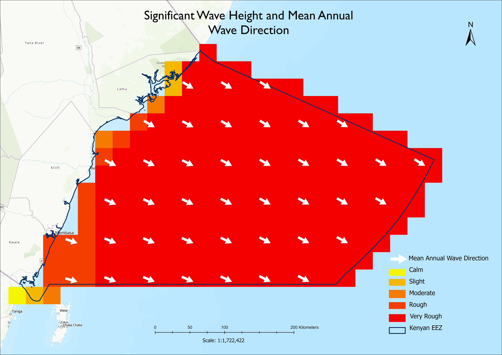
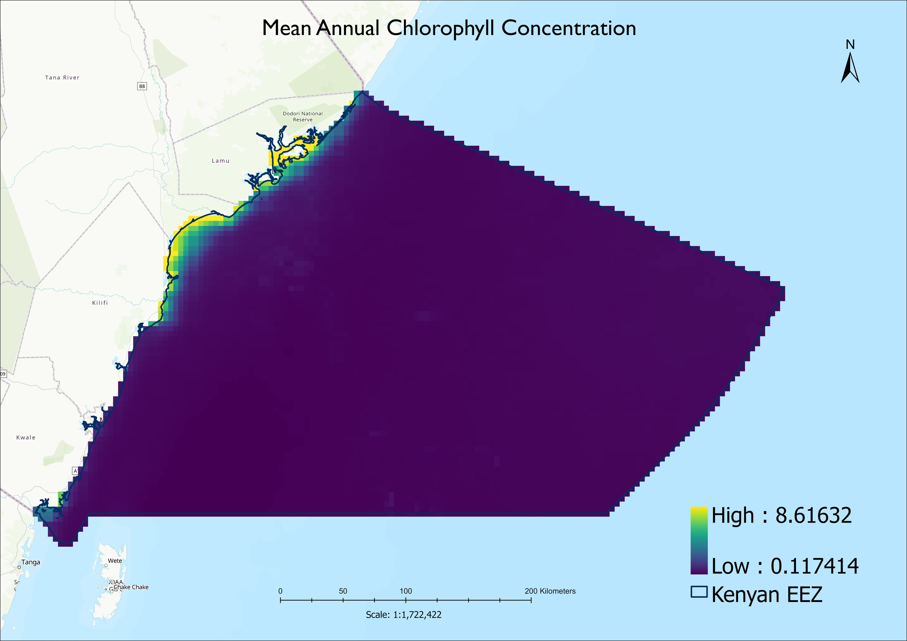

A marine map can show where the coast is, but planning for the ocean requires more than a coastline. The shape of the seabed, the movement of water, and changing conditions at the surface all influence marine habitats and human activities. Understanding these patterns gives planners a stronger basis for asking where uses may fit, where they may overlap, and what needs closer attention.
In the marine spatial planning work for Kwale and Lamu, physical and oceanographic themes form part of a wider atlas of information about Kenya’s coastal and marine environment. Each layer tells a different part of the story. Read together, they help describe how the ocean works across the planning area.
Start with the shape of the seafloor
Bathymetry is the measurement and mapping of water depth. A bathymetric surface shows how the seabed changes from shallow coastal waters to the continental shelf, shelf edge, slope and deeper offshore areas.

Those depth changes matter because they influence more than navigation. Seafloor depth and shape help shape currents, wave conditions and sediment movement. They also provide context for understanding where different habitats and marine activities occur.
Contours make the depth surface easier to interpret. Each contour connects locations with the same depth. Where contours are close together, the seabed is relatively steep; where they are farther apart, it is gentler. Slope and aspect add further detail: slope describes how steep the seafloor is, while aspect describes the direction a slope faces. Together, these measures help reveal features such as banks, channels, ridges and depressions.
The continental shelf is the submerged extension of the landmass, stretching from the shore toward the shelf break. Where a detailed shelf-break boundary is unavailable, the 200-metre contour can serve as a practical guide to the outer shelf. It is a useful reference, though the actual shape and width of the shelf vary from place to place.
Follow the moving water
The ocean is not still between mapped coastlines. Tides, waves, winds and currents continually move water and energy through the marine environment. Tidal zones mark coastal areas that are submerged at high tide and exposed at low tide. These shifting bands are important interfaces between land and sea, where tides redistribute sediment and influence coastal habitats.

Along the Kenyan coast, the contrast between the Northeast Monsoon, or Kaskazi, and the Southeast Monsoon, or Kusi, is especially relevant. The East African Coastal Current is predominantly northward, while the Somali Current reverses seasonally. Their interaction contributes to seasonal changes in coastal and offshore circulation, particularly in the north. Mapping the two monsoon periods separately helps make that seasonal pattern visible.

Waves carry energy toward the coast. Mean significant wave height provides a long-term picture of wave conditions, and mean wave direction indicates the prevailing direction from which waves approach. Together, these measures help planners understand exposure and potential patterns of sediment movement. Wave period—the time between successive crests—adds another clue: longer-period waves travel faster across the ocean and can carry substantial energy to shore.
Winds help generate waves and influence surface circulation. Mapping average wind speed and direction gives a broad view of atmospheric forcing, while seasonal patterns help explain why marine conditions can change through the year.
Look beneath the surface signals
Oceanographic maps also capture changing conditions in the water itself. Sea surface temperature, salinity, suspended sediment and chlorophyll each offer a different view of the coastal system.
Multi-year mean sea surface temperature can provide a baseline for comparing warmer and cooler areas. In this analysis, annual means were calculated over 2014–2024. Temperature patterns reflect solar heating, seasonal circulation, mixing, upwelling and exchanges between coastal and offshore waters. Variation matters alongside the mean: two locations may have similar average temperatures but very different seasonal swings.
Salinity maps show average salt concentration in seawater. Nearshore and estuarine waters can experience stronger fluctuations where freshwater from rivers and rainfall mixes with the sea. A variability layer helps distinguish these dynamic environments from areas where salinity is comparatively stable.
Sediment plume layers show where suspended material tends to be present in the water. River discharge, coastal erosion, tides, waves and currents can all contribute. A multi-year average identifies areas with persistent or recurring sediment influence, while variation maps show how the footprint changes from year to year. Long-term averages reveal broad patterns but can smooth over short-lived events such as floods and storms.

Chlorophyll-a offers an indicator of phytoplankton biomass and relative marine productivity. Higher concentrations can be associated with nutrient availability, coastal mixing, river inputs and upwelling. Fluorescence and productivity indices offer complementary information, but no single indicator tells the whole story; each should be interpreted alongside other environmental data.
Use the layers together
The value of these maps lies in their relationships. Depth zones can frame habitat analysis. Wave exposure and current direction add context to sediment movement. Temperature, salinity and chlorophyll patterns help show how environmental conditions vary across seasons and between coastal and offshore waters.
This matters in marine spatial planning because decisions rarely depend on one variable. Planners may need to consider ecological sensitivity, fisheries, navigation, infrastructure and community uses in the same area. Physical and oceanographic layers provide context for comparing those interests and asking better questions about potential overlap.
These maps are decision-support tools, not answers on their own. Their interpretation depends on the data, time period, resolution and classification choices. Multi-year averages are useful baselines, but they do not replace seasonal analysis or local knowledge. They work best alongside habitat information, human-use data and consultation with the people who depend on the coast.
A clearer picture of the ocean begins with understanding its physical structure and movement. Bathymetry shows the form of the seabed; waves, tides, winds and currents describe how energy and water move; and temperature, salinity, sediment and productivity layers reveal changing marine conditions. Together, they give planners a more grounded way to read the sea before making choices about its future.